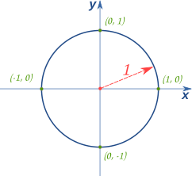

What is Cos
Similar posts: What is PI, Why is the Pythogrean Theorem what it is?
Why would anyone want to know what Cos is? If you are asking that question? If you are asking that question then ask yourself why you clicked the link. Curiosity right? Well that ain’t why I wrote this. But it partly is.
The Unit Circle: Fractional definition for Sine and Cosine

An easy means to understand is with a unit circle. A circle with a radius of 1 unit that is. This circle got a cartesian grid 2d figure with the origin (0,0) right at the circle’s center. We can assume the intersection of the positive X axis with the circle circumference (at point (1,0)) is where we place our 0 mark for rotational motion. I am being this descriptive since I haven’t gotten the means to draw graphics yet. Still learning the libraries for that.
Anyways. Assume we have a pointer. A red line with its tail pinned to the origin and its tip, the movable, at (1,0). Moving this tip around, say, anti-clockwise, will create some angle between the red line and the X axis. Lets call this theta. It will also create a vertical distance between the tip and the X axis.
We’ll call this y. And, there is a horizontal distance between the tip and the y axis. This we shall call x.
We can with this represent the tips x,y coordinates for this tip as (x,y).
x is maxed out (length: 1) when the tip is at (1,0) and minimum (length: -1) when tip is at (-1,0).
y on the other hand is maxed out (length: 1) when the tip is at (0,1) and minimum (length: -1) when tip is at (0,-1).
Connecting the origin to the pointer tip with a line of length r for radius
then the tip to the point on the x-axis that’s perpendicular to the pointer tip
whose length we’ve said is y would give us a right angled triangle with
sides x, y and r.
This triangle would, obey the pythogras rule (square of the longer side is the sum of the squares of the other two).
a_square + b_square = c_square
x_square + y_square = r_square
# Since its a unit circle, the rule is satisfied.
|x| = 1 = x_square
|y| = 1 = y_square
x_square + y_square = 1
Now if you don’t remember I will remind you.
Sin 0 = 0 = Sin 360 = Sin 180
Sin 90 = 1
Sin 270 = -1
Cos 0 = 1 = Cos 360
Cos 90 = 0 = Cos 270
Cos 180 = -1
Notice the relationship between a , b and Cosine and Sine.
Sure does look like |y| is Sine, |x| is Cosine.
And it is. We can extend this to show we have already derived a real important Trig identity.
|x| = Cos
|y| = Sin
x_square + y_square = 1
Cos_square + Sin_square = 1
So with that basic info, what is Cosine of_an_angle ? Cosine is the x component of the coordinates of a point anywhere on the circumference of a circle expressed as a fraction of the circle’s radius.
Replace “x_component” with y component and you have Sine. Usually we ain’t dealing with circles but triangles. And right angled triangles at that.
If you have a circle with its origin at the 0,0 mark on a 2D cartesian gird, dropping a perpendicular to the X-axis should give you a right angled triangle with “r” being the hypotenuse, “x” being “a” and the dropped line being “b” for your right angled triangle.
Also, any right angled triangle can be inscribed in a circle by treating its hypotenuse as a radius and using the stated formula for finding Sine and Cosine.
I guess with that you now understand where SOH CAH TOA comes from.
This ain’t maths entymology class so we won’t get into name derivations for Sine, Cosine or Tanget. But if you are inclined, here’s a nice starting point.
Tangent is simply a ratio of a right angle’s opposite to adjacent. The opposite could at times be the height or it could be the other way round so we can’t base the definition on that. It ain’t fixed.